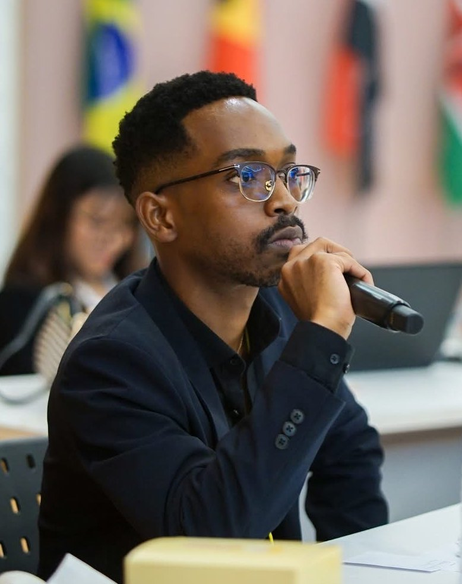

FOUNDER · UGANDA
Aaron Mwesigwa Mwebaze
Ugandan policy researcher based in Chiang Rai, Thailand. His master's research examines policy implementation, accountability and stakeholder partnerships, with a focus on Uganda's tourism sector. He founded The CPM and Exchange of Notes to build the same kind of partnerships between the Great Lakes and Southeast Asia, two Global South regions working toward sustainable development.